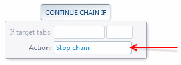
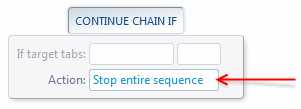
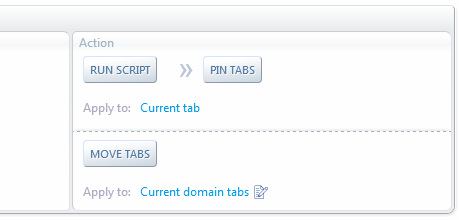

Forum
Install now from theChrome Web Store
Forum
Install now from theChrome Web Store
Forum
Install now from theChrome Web Store
Forum
Install now from theChrome Web Store



//If the current tab contains the term "Main Example" (case-insensitive)
if( document.body.innerText.match( /\bMain Example\b/i ) )
return ; //continue normally
//Else, if the current tab contains the word "Example"
if( document.body.innerText.match( /\bExample\b/i ) )
return ACtl.STOP_CHAIN ; //Don't execute remaining actions in the chain
//Else, don't execute remaining actions in all chains
return ACtl.STOP_FULL_SEQ ;